New Type 2016. 8. 6, 8 PM 토요일 오후 여덟 시 탈영역 우정국에서
티켓 예매
A(디자인) 김규호(글) 한유주 B(디자인) 함효정(글) 이로 영상이성욱 컨셉, 연출정진화 후원서울특별시서울문화재단한국문화예술위원회 협력아이디언탈영역 우정국
마음에 없는 말
마음에 없는 말 (New Type: A) 글: 한유주(울리포프레스)
소개글
내뱉은 말을 주워 담은 적이 있는가. 시작이 있어야 할 자리에 끝이 있다. 시작하자마자 끝난다는 말이 아니다. 시작과 동시에 끝이 있다는 말도 아니다. 다만 끝이 먼저 시작하고, 시작이 나중에 끝난다고 말할 수 있을 것이다. 손에 쥔 모래처럼 빠져나가는 말들을 되돌리려는 두 사람의 기이한 대화.
리뷰
파도는 없었다. 모래사장도 없었다. 빛도 없었기에 어둠 속에서 대단한 주의를 기울여 자리를 찾아야 했다. 누군가가 의자 다리에 걸렸는지 잠시 요란한 소리가 났고, 조그만 웅성거림이 있었다. 그 소리가 잦아들고 잠시 후, 불이 켜졌다. 그래도 여전히 파도와 모래사장은 보이지 않았다. 다만 파도소리와 매우 유사한 소리, 그러니까…… (보러 가기)
그것이 부서졌다
그것이 부서졌다 (New Type: B) 글: 이로(유어마인드 & 언리미티드 에디션)
소개글
⟨New Type : B 그것이 부서졌다⟩는 하나의 결과가 조직되는 과정을 카드 패처럼 삼아 그 순서를 뒤섞어 펼치는 공연이다. 먼저 디자이너가 전체 제목만을 단서로 이미지를 만든다. 이를 바탕으로 작가가 본 적 없는 장면에 대한 글을 쓰면 연출가와 영상 제작자가 멋대로 예견된 미래를 바탕으로 실제 공연을 만든다. 과정이 지닌 일반적인 위계를 잠깐 추락시키자 그 틈에서 극의 실마리가 자발적으로 발생한다. 그때 (이) 공연은 누구에 의해 만들어진 것인가?
리뷰
공연을 한다. 무엇이 필요한가. 무대라고 인식되는 무대가 있어야 한다. 무대는 지켜보는 사람의 영역과 지켜보게끔 하는 사람의 영역에 격차를 만든다. 구역으로, 명암으로, 높이로, 시선의 방향으로 이곳과 저곳의 층위를 나누고 이야기가 발생하는 곳이 어디인지 끊임없이 지칭한다.…… (보러 가기)